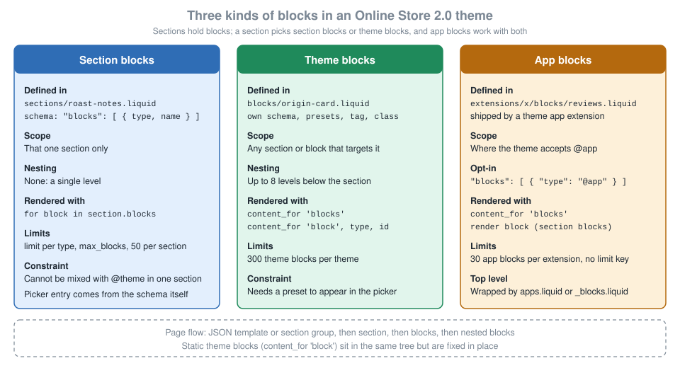
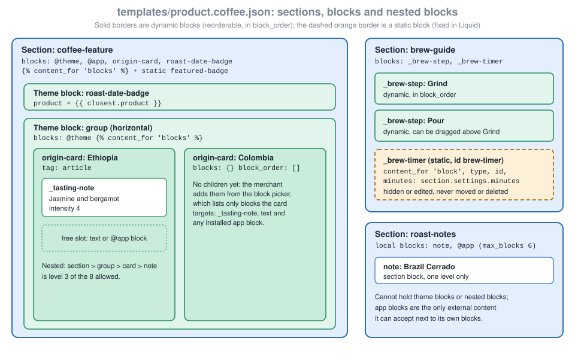

Sections and Theme Blocks
|
This content was generated with the assistance of AI and should be verified against the official documentation before being relied on in production. |
This page covers the content model of an Online Store 2.0 theme below the template level: the sections that a JSON
template lists, and the blocks that merchants add, remove, reorder and nest inside them. It was checked on 2026-10-27
against Shopify CLI 5.0.0, Theme Check 3.31.0 (the engine behind shopify theme check), the Skeleton theme, Dawn 16.0.0
and Horizon 4.3.0. Liquid itself is unversioned and evolves continuously, so the statements below describe the
documentation and the tools as they stood on that date. Nothing on this page is tied to a plan: the developer
documentation lists no plan restriction for sections, blocks, presets or static blocks.
Three kinds of blocks exist and they are easy to confuse. Section blocks are defined inside one section’s schema and
cannot nest. Theme blocks are their own Liquid files in the blocks folder, can be reused by any section or block that
targets them and can nest up to eight levels deep. App blocks are shipped by an installed app and appear wherever the
theme accepts them. The page explains each kind, how a theme opts into them, how presets and static blocks fit in, and
how to validate all of it offline with Theme Check. The running example is Pocket Coffee: a specialty-coffee shop with
a single-origin beans product, a roast date shown as a badge, origin cards with tasting notes, and a short brew guide.
Where this page sits in the learning path: Theme Architecture introduces the folders, layouts and JSON templates, Liquid Language covers the language, and this page covers the section and block layer on top of both. The apps side of app blocks continues in Theme App Extensions and Web Pixels, and Reference Themes: Skeleton, Dawn and Horizon shows which of the three reference themes uses which kind of block.
How a page is assembled
A storefront page is a tree. The layout (layout/theme.liquid) outputs {{ content_for_layout }}, which renders the
JSON template that matches the requested page. The template lists sections in an order array. A section is a Liquid
file in sections with a {% schema %} tag that declares its settings, the blocks it accepts and its presets. Blocks
are the pieces inside a section that the merchant can add, remove and reorder in the theme editor, each with its own
settings. Header and footer areas use section groups, which are JSON files in sections that list sections in the same
way a template does.
Figure 1 compares the three kinds of blocks side by side. The cards list where each kind is defined, who can use it, how it nests, how Liquid renders it and which limits apply.

The structural limits that apply to the whole tree are small and worth memorising:
| Limit | Value | Where it applies |
|---|---|---|
Sections per JSON template |
25 |
Each section can hold up to 50 blocks. |
Sections per section group |
25 |
Same 50 blocks per section. |
Blocks per section |
50 (lower with |
Static blocks do not count toward the limit. |
JSON templates per theme |
1,000 |
After the limit no new JSON template can be created. |
Theme blocks per theme |
300 |
Every |
Nesting depth of theme blocks |
8 |
Counted below the section level. |
App blocks per theme app extension |
30 |
Raised from 25 on 2026-02-03. |
Source: JSON templates, Section groups, Blocks, Block schema and Changelog, app block limit.
Version history of the block model
The block model grew in steps. Each row below is a documented change, and the date is the changelog date.
| Date | Change |
|---|---|
2024-10-30 |
Metaobject and metaobject list theme settings became available for sections and blocks. |
2025-05-21 |
Several block features shipped together: categories for section and block presets, block previews in the theme editor, recommended theme blocks in the block picker, parameters for static blocks, and LiquidDoc for snippets and blocks. |
2025-07-14 |
The Flex sections developer preview closed. Theme blocks became available to every theme developer. The preview’s style settings were not carried forward. |
2026-01-13 |
Stricter Liquid parsing is enforced for all themes. New Theme Store and App Store submissions must be strictly parsable. |
2026-02-03 |
The limit of app blocks per theme app extension rose from 25 to 30. |
2026-07-21 |
The Liquid July '26 developer preview added the |
2026-10-01 |
|
Sections at a glance
A section is a Liquid file in the sections folder. It has three kinds of content: the markup (HTML and Liquid, with
access to global objects, tags and filters plus the section and block objects), optional assets declared with
{% stylesheet %} and {% javascript %}, and the schema. A section can be rendered in three ways: by listing it in
a JSON template or section group (the normal way, which lets merchants add, remove and reorder it), by rendering it
statically with {% section 'name' %} (which merchants cannot remove or reorder, and which has one shared instance
for all of its static renderings), or through the Section Rendering API. Rendering statically is discouraged whenever a
JSON template or section group can do the job.
When Shopify renders a section it wraps the output in a div with id="shopify-section-<id>" and the class
shopify-section. The tag and class schema attributes change the element and add classes.
The {% schema %} tag accepts these attributes. A file may contain only one schema tag, the tag may not be nested
inside another Liquid tag, and its content must be valid JSON that uses only the listed attributes.
| Attribute | Meaning |
|---|---|
|
Title shown in the theme editor. Either a string or a |
|
Wrapper element: |
|
Classes added after |
|
Maximum instances of the section on a template or section group: 1 or 2. Unlimited when absent. |
|
Section-level input settings. Setting IDs must be unique inside the section. Read as |
|
Section blocks (local definitions) or the |
|
Lower than the platform cap of 50 blocks per section. Static blocks do not count. |
|
Predefined configurations offered in the Add section picker. Required for a section to be addable from the editor. |
|
Default configuration for a statically rendered section. Same attributes as a preset. |
|
Per-language strings bundled with the section, edited in the language editor and read as |
|
Restrict a section to, or exclude it from, template page types and section groups ( |
The section object exposes blocks, id, index, index0, location and settings. The ID of a section that comes
from a JSON template is generated by Shopify, while a statically rendered section uses its file name as the ID. The
location is template, a section group type such as header or footer, static, or content_for_index. The
index properties are nil for statically rendered sections, in the theme editor and in the Section Rendering API, so
use them only for non-visual work such as deciding which images to lazy-load. The block object exposes id,
settings, shopify_attributes and type.
Source: Sections, Section schema, Liquid object: section and Liquid object: block.
Section blocks
Section blocks are the original block mechanism. They are declared in the blocks array of the section’s own schema and
exist only inside that section. They cannot nest, they cannot be used by other sections, and a section that defines them
cannot also accept theme blocks. Use them when a section has a small, closed set of repeatable items, such as slides,
FAQ rows or the tasting notes below.
Each entry in the section’s blocks array supports four attributes.
| Attribute | Required | Meaning |
|---|---|---|
|
Yes |
Free-form identifier, unique within the section. Read as |
|
Yes |
Title in the theme editor. Names and types must both be unique within a section. |
|
No |
How many blocks of this type the section can hold. |
|
No |
Input or sidebar settings. IDs must be unique within the block. Read as |
The theme editor labels each block in the sidebar with its name, unless a setting with the ID heading, title or
text exists, in which case that setting’s value is used, in that order of precedence. A block that is a single element
must carry {{ block.shopify_attributes }} so the theme editor can identify it and send JavaScript events to it. The
attribute returns nothing outside the theme editor.
The following section lists Pocket Coffee tasting notes. It defines one local block type note with at most three
instances, caps the section at six blocks, and also accepts app blocks. It was added to the product alternate template
shown later and passed Theme Check with no offences, both with the default theme-check:recommended rules and with
theme-check:all.
<div class="roast-notes">
<h2>{{ section.settings.heading }}</h2>
<ul class="roast-notes__list">
{%- for block in section.blocks -%}
{%- case block.type -%}
{%- when 'note' -%}
<li class="roast-notes__item" {{ block.shopify_attributes }}>
<strong>{{ block.settings.origin }}</strong>: {{ block.settings.tasting_note }}
</li>
{%- when '@app' -%}
{% render block %}
{%- endcase -%}
{%- endfor -%}
</ul>
</div>
{% stylesheet %}
.roast-notes__list {
list-style: none;
padding: 0;
}
{% endstylesheet %}
{% schema %}
{
"name": "Roast notes",
"tag": "section",
"class": "roast-notes-section",
"max_blocks": 6,
"settings": [
{
"type": "text",
"id": "heading",
"label": "Heading",
"default": "Tasting notes"
}
],
"blocks": [
{
"type": "note",
"name": "Tasting note",
"limit": 3,
"settings": [
{
"type": "select",
"id": "origin",
"label": "Origin",
"options": [
{ "value": "Ethiopia Yirgacheffe", "label": "Ethiopia Yirgacheffe" },
{ "value": "Colombia Huila", "label": "Colombia Huila" },
{ "value": "Brazil Cerrado", "label": "Brazil Cerrado" }
],
"default": "Ethiopia Yirgacheffe"
},
{
"type": "text",
"id": "tasting_note",
"label": "Tasting note",
"default": "Jasmine and bergamot"
}
]
},
{ "type": "@app" }
],
"presets": [
{
"name": "Roast notes",
"category": "Pocket Coffee",
"settings": { "heading": "Tasting notes" },
"blocks": [
{
"type": "note",
"settings": { "origin": "Ethiopia Yirgacheffe", "tasting_note": "Jasmine and bergamot" }
},
{
"type": "note",
"settings": { "origin": "Colombia Huila", "tasting_note": "Red apple and caramel" }
}
]
}
]
}
{% endschema %}Source: Section blocks and Section schema, blocks.
Notes on the example:
-
The
casestatement chooses markup byblock.type. The@appbranch uses{% render block %}, which is how an app block is rendered next to section-defined blocks. Without that branch an app block added to the section would render nothing. -
Never compare
block.idwith a literal such asJ6d9jV. The ID is generated by Shopify and can change, and Theme Check reports such comparisons as aBlockIdUsagewarning. -
The
limitattribute of thenoteblock belongs to the local block. It is not allowed on the@appentry. -
Presets can pre-populate blocks. The
blocksarray in a preset lists the blocktypeand optionallysettings.
Theme blocks
A theme block is a Liquid file in the blocks folder. The file has markup, optional {% stylesheet %} and
{% javascript %} tags, an optional {% doc %} LiquidDoc header and a {% schema %} tag. A theme can contain at
most 300 theme blocks. In Online Store 2.0 terms they behave like small sections: they have settings, presets and a
wrapper element, merchants can add and reorder them in the editor, and they can contain other blocks.
The {% schema %} tag of a theme block accepts name, settings, blocks, presets, tag and class. Theme blocks
cannot define local blocks in their blocks attribute: that attribute only lists @theme, @app or named theme blocks.
| Attribute | Meaning |
|---|---|
|
Block title in the editor. |
|
Block-specific input settings. Duplicate IDs inside one block are an error. Read as |
|
Accepted child blocks: |
|
Predefined configurations, including nested child blocks. A theme block appears in the block picker only if it has at least one preset. |
|
Wrapper element, any string up to 50 characters, or |
|
Classes added after the platform class |
By default a theme block is wrapped in <div id="shopify-block-<id>" class="shopify-block">. With "tag": null the block
renders without a wrapper. In that case the block file must contain a single topmost HTML element and that element must
carry {{ block.shopify_attributes }}; otherwise the theme editor cannot move the whole block when merchants reorder it
and leaves orphaned markup behind.
Inside a theme block the Liquid objects are block (its own ID, type and settings), section (the section that rendered
it) and the global objects. A theme block cannot see variables created outside it and, unlike a snippet, cannot be passed
variables from its parent, with one exception: static blocks receive named arguments, described below.
Theme blocks versus snippets
Both reuse code, but they serve different purposes.
| Aspect | Theme block | Snippet |
|---|---|---|
Settings in the theme editor |
Yes, per instance |
No |
Merchant can customise each instance |
Yes |
No |
Access to the parent section and global objects |
Yes |
Global objects, plus the variables passed in |
Receives variables from the parent |
No (static blocks accept named arguments) |
Yes, through |
A product card often uses both: theme blocks for the structure and settings, snippets for small pieces of markup that many blocks share. Source: Blocks, theme blocks vs snippets.
A first theme block: the roast date badge
The Pocket Coffee roast date badge reads the custom.roast_date metafield (type date) of a product. The product is a
block setting whose preset value is {{ closest.product }}, the dynamic source that resolves to the nearest product in
the page, described later. The block uses "tag": null and puts {{ block.shopify_attributes }} on its single span.
Inside the theme editor, request.design_mode is true, so the block shows a placeholder when the metafield is empty and
nothing on the live storefront.
{% doc %}
Shows the roast date of a coffee as a badge.
Reads the custom.roast_date product metafield (type: date). The product comes
from the closest product in the page: the block setting, a parent block, the
section or the template.
{% enddoc %}
{%- assign roast_date = block.settings.product.metafields.custom.roast_date.value -%}
{%- if roast_date != blank -%}
<span class="roast-badge" {{ block.shopify_attributes }}>
Roasted on {{ roast_date | date: '%d %b %Y' }}
</span>
{%- elsif request.design_mode -%}
<span class="roast-badge roast-badge--placeholder" {{ block.shopify_attributes }}>
Roast date (set the custom.roast_date metafield)
</span>
{%- endif -%}
{% stylesheet %}
.roast-badge {
display: inline-block;
padding: 0.25rem 0.75rem;
border-radius: 999px;
font-size: 0.875rem;
background: #f3e9dc;
color: #4a2c12;
}
.roast-badge--placeholder {
opacity: 0.6;
}
{% endstylesheet %}
{% schema %}
{
"name": "Roast date badge",
"tag": null,
"settings": [
{
"type": "product",
"id": "product",
"label": "Product"
}
],
"presets": [
{
"name": "Roast date badge",
"category": "Pocket Coffee",
"settings": { "product": "{{ closest.product }}" }
}
]
}
{% endschema %}Source: Theme blocks quick start, Block schema and Integrate sections and blocks with the theme editor.
The {% doc %} header is LiquidDoc: documentation for humans, editors and Theme Check. It does not declare, validate or
bind parameters. A value passed to a block that appears only in {% doc %} is a plain variable, never
block.settings.<name>, and a value whose name matches a schema setting also sets that setting when the block is called
with the {% block %} tag (see the Liquid-first section).
The quick-start tutorial in the official documentation builds a text theme block, a group block that nests it and a
custom-section that accepts both. Skeleton ships those three files, blocks/text.liquid, blocks/group.liquid and
sections/custom-section.liquid, so every example on this page reuses them instead of redefining them. Horizon 4.3.0
ships 95 files in blocks (51 private and 44 public, for example accordion, button, group, image, price,
product-card and text), while Dawn 16.0.0 has no blocks folder and uses section blocks, with @app entries in sections such as
main-product.
Choosing a block type
The decision is mostly about who owns the content and how far it must travel. The flow below is the one Pocket Coffee used for each piece of its product page.
Letting a section accept theme blocks
A section opts into theme blocks by listing @theme in the blocks array of its schema, and renders them with
{% content_for 'blocks' %}. A section can either define local blocks or opt into theme blocks. It cannot do both. Theme
Check reports the combination with ValidLocalBlocks.
<div class="coffee-feature">
<h2>{{ section.settings.heading }}</h2>
<div class="coffee-feature__blocks">
{% content_for 'blocks' %}
</div>
{% if section.settings.featured_product != blank %}
{% content_for 'block', type: 'roast-date-badge', id: 'featured-badge', closest.product: section.settings.featured_product %}
{% endif %}
</div>
{% schema %}
{
"name": "Coffee feature",
"settings": [
{
"type": "text",
"id": "heading",
"label": "Heading",
"default": "Single-origin beans"
},
{
"type": "product",
"id": "featured_product",
"label": "Featured product"
}
],
"blocks": [
{ "type": "@theme" },
{ "type": "@app" },
{ "type": "origin-card" },
{ "type": "roast-date-badge" }
],
"presets": [
{
"name": "Coffee feature",
"category": "Pocket Coffee"
},
{
"name": "Beans spotlight",
"category": "Pocket Coffee",
"settings": { "heading": "Single-origin beans" },
"blocks": [
{ "type": "roast-date-badge" },
{
"type": "group",
"settings": { "layout_direction": "group--horizontal" },
"blocks": [
{ "type": "origin-card", "settings": { "origin": "Ethiopia Yirgacheffe" } },
{ "type": "origin-card", "settings": { "origin": "Colombia Huila" } }
]
}
]
}
]
}
{% endschema %}Source: Theme blocks quick start and Liquid tag: content_for.
The blocks array has four entries: @theme accepts every public theme block, @app accepts app blocks, and the two
named entries (origin-card and roast-date-badge) are the recommended blocks. When a section lists @theme together
with named blocks, the named ones appear first in the block picker and the rest are behind Show all. The preset
Beans spotlight pre-populates a badge and a horizontal group that holds two origin cards.
The content_for tag
{% content_for %} creates a designated area where blocks are rendered. It takes a type argument that selects between
two behaviours.
| Form | Syntax | Behaviour |
|---|---|---|
Dynamic |
|
Renders every block of the section or parent block in the order stored in the JSON template. Merchants can add,
remove, reorder and nest. Also renders |
Static |
|
Renders one theme block of the named type with a fixed ID, at this exact place in the code. Extra named arguments are passed to the block as variables. |
Both forms are used in sections and in theme blocks. The ID of a static block
is mandatory and it must be a string literal, because Shopify never generates it. Theme Check checks the arguments with
ValidContentForArguments, the existence of the block file with ValidStaticBlockType and the uniqueness of IDs with
UniqueStaticBlockId.
Source: Liquid tag: content_for and Static blocks.
Targeting: which blocks a section or block accepts
Targeting decides what the Add block picker offers. The picker is built from the blocks array of the section or
block that the merchant is editing.
-
{ "type": "@theme" }accepts every theme block that has a preset and is not private. -
{ "type": "@app" }accepts app blocks (the Apps section of the picker). -
{ "type": "origin-card" }accepts one named theme block. A named block appears even if it is private. -
Combining
@themewith named blocks recommends the named ones: they show first, and the rest sit behind Show all.
A theme block shows in the picker only if it has at least one preset, and by default every block with a preset is
available in all sections and blocks that accept @theme. When a block should be reserved for one parent, give the file
a leading underscore. Underscore-prefixed blocks (private blocks) are excluded from @theme and must be named
explicitly. In Pocket Coffee, tasting notes and brew steps are private blocks, so they are offered only by the cards and
the brew guide that name them. Horizon 4.3.0 follows the same convention for 51 of its 95 blocks.
Presets appear alphabetically in the picker, grouped in collapsible categories when a preset has a
category, with uncategorised presets first.
{% doc %}
A single tasting note. Private block (underscore prefix): it is only offered
by blocks and sections that name it in their blocks list.
{% enddoc %}
<p class="tasting-note" data-intensity="{{ block.settings.intensity }}" {{ block.shopify_attributes }}>
{{ block.settings.text }}
</p>
{% schema %}
{
"name": "Tasting note",
"tag": null,
"settings": [
{
"type": "text",
"id": "text",
"label": "Note",
"default": "Jasmine and bergamot"
},
{
"type": "range",
"id": "intensity",
"label": "Intensity",
"min": 1,
"max": 5,
"step": 1,
"default": 3
}
],
"presets": [
{ "name": "Tasting note", "category": "Pocket Coffee" }
]
}
{% endschema %}{% doc %}
A card for one coffee origin. It accepts nested tasting notes, text blocks and
app blocks, so the same card can be reused in any section that accepts theme
blocks.
{% enddoc %}
<div class="origin-card__header">
<h3>{{ block.settings.origin }}</h3>
</div>
<div class="origin-card__body">
{% content_for 'blocks' %}
</div>
{% stylesheet %}
.origin-card {
border: 1px solid #d9c7b0;
border-radius: 8px;
padding: 1rem;
}
{% endstylesheet %}
{% schema %}
{
"name": "Origin card",
"tag": "article",
"class": "origin-card",
"settings": [
{
"type": "select",
"id": "origin",
"label": "Origin",
"options": [
{ "value": "Ethiopia Yirgacheffe", "label": "Ethiopia Yirgacheffe" },
{ "value": "Colombia Huila", "label": "Colombia Huila" },
{ "value": "Brazil Cerrado", "label": "Brazil Cerrado" }
],
"default": "Ethiopia Yirgacheffe"
}
],
"blocks": [
{ "type": "@app" },
{ "type": "_tasting-note" },
{ "type": "text" }
],
"presets": [
{ "name": "Origin card", "category": "Pocket Coffee" },
{
"name": "Yirgacheffe card",
"category": "Pocket Coffee",
"settings": { "origin": "Ethiopia Yirgacheffe" },
"blocks": [
{
"type": "_tasting-note",
"settings": { "text": "Jasmine and bergamot", "intensity": 4 }
},
{
"type": "_tasting-note",
"settings": { "text": "Light, tea-like body", "intensity": 2 }
}
]
}
]
}
{% endschema %}Source: Theme block targeting and Block schema, blocks.
Nesting
Theme blocks nest by listing child blocks in their own blocks attribute and rendering them with
{% content_for 'blocks' %}. The origin-card above accepts @app, the private _tasting-note and the public text
block, and renders them inside its body. Theme blocks can nest up to eight levels deep, counted below the section.
The JSON template stores the tree: each block has an ID, a type, settings, a blocks map of children and a block_order
array that gives their order. The same rendering mechanism is used by sections and by blocks.
Figure 2 shows the Pocket Coffee product template as nested boxes. The coffee-feature section holds the badge and a
group, the group holds two origin cards, and the first card holds a tasting note. The brew-guide section holds
dynamic steps and a static timer, and the roast-notes section holds one local section block.

The complete template is an alternate product template, templates/product.coffee.json. The dynamic blocks are in
block_order. The static timer has "static": true and is not in block_order, because its position is decided by the
Liquid code, not by the merchant. The three section IDs coffee_feature, brew_guide and notes are alphanumeric with
underscores and unique within the template.
{
"sections": {
"main": {
"type": "product",
"settings": {}
},
"coffee_feature": {
"type": "coffee-feature",
"blocks": {
"badge": {
"type": "roast-date-badge",
"settings": {
"product": "{{ closest.product }}"
}
},
"columns": {
"type": "group",
"settings": {
"layout_direction": "group--horizontal"
},
"blocks": {
"ethiopia": {
"type": "origin-card",
"settings": {
"origin": "Ethiopia Yirgacheffe"
},
"blocks": {
"note_1": {
"type": "_tasting-note",
"settings": {
"text": "Jasmine and bergamot",
"intensity": 4
}
}
},
"block_order": ["note_1"]
},
"colombia": {
"type": "origin-card",
"settings": {
"origin": "Colombia Huila"
},
"blocks": {},
"block_order": []
}
},
"block_order": ["ethiopia", "colombia"]
}
},
"block_order": ["badge", "columns"],
"settings": {
"heading": "Single-origin beans",
"featured_product": "ethiopia-yirgacheffe"
}
},
"brew_guide": {
"type": "brew-guide",
"blocks": {
"brew-timer": {
"type": "_brew-timer",
"static": true,
"settings": {
"label": "Start the filter timer"
}
},
"grind": {
"type": "_brew-step",
"settings": {
"title": "Grind",
"instructions": "Use 15 g of filter-ground beans."
}
},
"pour": {
"type": "_brew-step",
"settings": {
"title": "Pour",
"instructions": "Add 250 ml of water at 94 degrees C."
}
}
},
"block_order": ["grind", "pour"],
"settings": {
"heading": "How to brew",
"minutes": 3
}
},
"notes": {
"type": "roast-notes",
"blocks": {
"note_a": {
"type": "note",
"settings": {
"origin": "Brazil Cerrado",
"tasting_note": "Hazelnut and milk chocolate"
}
}
},
"block_order": ["note_a"],
"settings": {
"heading": "Tasting notes"
}
}
},
"order": ["main", "coffee_feature", "brew_guide", "notes"]
}Block IDs inside the JSON do not have to be unique across the section any more. A block ID must be unique only among the children of its immediate parent. That matters for static blocks, which can be rendered in several places.
A hand-edited template can name a block type that does not exist. Theme Check reports that with JSONMissingBlock, and
reports block references inside schemas with ValidBlockTarget.
Presets
Presets turn an empty block file into something merchants can pick from a list. There are three similarly named concepts, and mixing them up is a common mistake.
| Concept | Where it lives | What it does |
|---|---|---|
Section presets |
|
Entries in the Add section picker. A section without a preset cannot be added from the editor. It must be written into the JSON template by hand and cannot then be removed by the merchant. |
Block presets |
|
Entries in the Add block picker. A theme block without a preset never appears there. Different presets of the same block can configure different settings and different child blocks. |
Theme presets |
|
Named sets of whole-theme settings. Unrelated to section and block presets despite the name. |
A section or block preset has these attributes:
| Attribute | Required | Meaning |
|---|---|---|
|
Yes |
Label in the picker and sidebar. It is written to the JSON template when the merchant adds the block. |
|
No |
Groups related presets into a collapsible category in the picker. |
|
No |
Default values keyed by setting ID. |
|
No |
Default child blocks. Each entry needs a |
The origin-card and coffee-feature files above each define more than one preset. For example,
origin-card has a plain Origin card preset and a Yirgacheffe card preset that pre-populates two tasting notes with
their own settings. A preset can also refer to other theme blocks in the theme, which is how a Column preset of a
group block can include two text blocks, as in the official quick start.
Section presets are different from default: the default object is for sections that are statically rendered, and it
takes the same attributes as a preset. Sections that are installed on several themes or shops, and statically rendered
sections that ship pre-installed in a theme, should use default and the per-setting default attribute instead of a
preset.
Static blocks
A static block is a theme block rendered with {% content_for 'block', type: '...', id: '...' %} instead of
{% content_for 'blocks' %}. It lets a section or block fix the position of a block: merchants can hide it and change
its settings, but they cannot move, delete or duplicate it. It also lets Liquid render the block conditionally or in a
loop, which a dynamic block cannot do.
| Static blocks | Dynamically rendered blocks |
|---|---|
Can be hidden and customised |
Can be hidden and customised |
Cannot be reordered by drag and drop |
Can be reordered |
Cannot be removed or duplicated |
Can be removed or duplicated |
Can be rendered conditionally or in a |
Cannot be rendered conditionally or in a |
Parsed even if the preset does not list them |
Must be in a preset to be part of it |
Do not count toward the |
Count toward the |
The type is the name of a block file in blocks. The id is required, because the same block can be rendered
statically more than once. Any further named argument is passed to the block as a variable, for example
color: "#111" is available as {{ color }} inside the block. The changelog entry dated 2025-05-21 introduced this
parameter passing. Static blocks also receive dynamic source data from their parents, and Liquid can set a source for
the closest resource with an argument such as closest.product: product, which Horizon 4.3.0 uses in its collection
card.
Static block example: the brew timer
The Pocket Coffee brew-guide section has dynamic _brew-step blocks that merchants can reorder and a static
_brew-timer that stays after the steps. The timer is rendered only when the section has more than one block, so the
theme editor shows the conditional eye icon next to it. The brew time (minutes) is passed from a section setting as a
named argument. The timer block documents the argument in LiquidDoc and reads it with a default.
<div class="brew-guide">
<h2>{{ section.settings.heading }}</h2>
<ol class="brew-guide__steps">
{% content_for 'blocks' %}
</ol>
{% if section.blocks.size > 1 %}
{% content_for 'block', type: '_brew-timer', id: 'brew-timer', minutes: section.settings.minutes %}
{% endif %}
</div>
{% schema %}
{
"name": "Brew guide",
"settings": [
{
"type": "text",
"id": "heading",
"label": "Heading",
"default": "How to brew"
},
{
"type": "range",
"id": "minutes",
"label": "Brew time",
"min": 1,
"max": 10,
"step": 1,
"unit": "min",
"default": 3
}
],
"blocks": [
{ "type": "_brew-step" },
{ "type": "_brew-timer" }
],
"presets": [
{
"name": "Brew guide",
"category": "Pocket Coffee",
"blocks": [
{
"type": "_brew-timer",
"id": "brew-timer",
"static": true,
"settings": { "label": "Start the filter timer" }
},
{
"type": "_brew-step",
"settings": { "title": "Grind", "instructions": "Use 15 g of filter-ground beans." }
},
{
"type": "_brew-step",
"settings": { "title": "Pour", "instructions": "Add 250 ml of water at 94 degrees C." }
}
]
}
]
}
{% endschema %}Source: Liquid tag: content_for
{% doc %}
Brew timer controls.
@param {number} [minutes] - Brew time in minutes; defaults to 3.
{% enddoc %}
<div class="brew-timer" {{ block.shopify_attributes }}>
<button type="button" class="brew-timer__start" data-minutes="{{ minutes | default: 3 }}">
{{ block.settings.label }}
</button>
</div>
{% schema %}
{
"name": "Brew timer",
"tag": null,
"settings": [
{
"type": "text",
"id": "label",
"label": "Button label",
"default": "Start timer"
}
]
}
{% endschema %}{% doc %}
One step of a brew guide.
{% enddoc %}
<li class="brew-step" {{ block.shopify_attributes }}>
<strong>{{ block.settings.title }}</strong>: {{ block.settings.instructions }}
</li>
{% schema %}
{
"name": "Brew step",
"tag": null,
"settings": [
{
"type": "text",
"id": "title",
"label": "Title",
"default": "Rinse the filter"
},
{
"type": "text",
"id": "instructions",
"label": "Instructions",
"default": "Pour hot water through the filter and discard it."
}
],
"presets": [
{ "name": "Brew step", "category": "Pocket Coffee" }
]
}
{% endschema %}Source: Static blocks and Passing parameters to static blocks.
Three details of the example matter:
-
The preset contains the static timer with
"static": trueand the sameidas the Liquid tag. A section or block that renders static blocks but does not list them in its presets still gets them, with their default settings. Listing them overrides the settings. Theme Check reports a preset that names a static block with no matching tag (SchemaPresetsStaticBlocks). -
In the JSON template the static block is stored with
"static": trueand its ID is not inblock_order. Shopify derives the order of static blocks from where they sit in the Liquid code relative to the dynamic blocks. -
Static blocks stored in JSON can also be nested. The official documentation shows a collapsible row whose summary and icon are static blocks, with the icon nested inside the summary.
The Skeleton group block shows a related pattern. Its LiquidDoc header documents the call
{% content_for 'block', type: 'group', id: 'group' %} as an example, which renders a group as a static block.
Dynamic sources and the closest resource
Block settings can be connected to data instead of fixed values: merchants connect compatible settings to a dynamic source in the theme editor, and a theme block can read data from four places.
| Source | Where the data comes from |
|---|---|
Template |
The resource of the template being rendered, such as |
Section |
A resource setting of the section, such as |
Block |
A resource setting of any ancestor block, such as |
Liquid |
A resource passed explicitly through |
Theme blocks are reusable and nestable, so a block cannot know where its data will come from. The closest access path
resolves the nearest resource of a type: {{ closest.product }}, {{ closest.collection }}, {{ closest.article }},
{{ closest.blog }}, {{ closest.page }} and {{ closest.metaobject[<definition_type>] }}. The resolution order is the
closest Liquid context setter, then the closest ancestor block setting, then the section settings, then the template
resource. closest works only in settings, usually as a preset value, as in the roast date badge, and it keeps pointing
at the same ancestor even when that ancestor’s setting is empty (the nested blocks show placeholders).
Section settings of type product or collection can be used as dynamic sources, and app blocks get the same behaviour
through autofill. For that reason a section that supports app blocks should have at most one resource setting of each
type, to avoid ambiguity. In Pocket Coffee the coffee-feature section has one product setting and one static badge
that reads it:
{% content_for 'block', type: 'roast-date-badge', id: 'featured-badge', closest.product: section.settings.featured_product %}This line is part of sections/coffee-feature.liquid above and passed Theme Check.
Source: Dynamic sources for theme blocks and Dynamic sources.
App blocks
An app block is a block that an app ships and a merchant adds to a theme. It lets an app put content in a section
without editing theme code, and it replaces the old script-tag pattern for visible content. Both sides have work to do:
the theme must accept and render @app, and the app must ship a theme app extension whose block has the right schema.
What the theme must do
-
Use JSON templates, because merchants add app blocks in the theme editor.
-
List
{ "type": "@app" }in theblocksarray of every section and block that should accept app blocks. The entry does not acceptlimit: including it is an error. -
Render the blocks with
{% content_for 'blocks' %}, or inside a loop oversection.blocksuse{% render block %}for the@apptype (seesections/roast-notes.liquidabove). -
Keep at most one resource setting per type in a section that supports app blocks.
App blocks are not supported in statically rendered sections. In the theme editor merchants add an app block either inside an existing section or as a top-level block at the template level. A top-level app block is wrapped in a section, and the theme chooses the wrapper:
-
A theme
sections/apps.liquidfile, if present. It must accept@app, define a preset and not use thetemplatesattribute, including insideenabled_onanddisabled_on. Otherwise the editor showsApps not supportedorApps section is invalid. -
Otherwise a theme
sections/_blocks.liquidfile, which is a more generic wrapper for both@themeand@appblocks. It needs both block types, a preset and acontent_for 'blocks'call, and the same absence oftemplates. -
Otherwise a platform-generated
apps.liquidwrapper.
Dawn 16.0.0 ships sections/apps.liquid, and Horizon 4.3.0 ships sections/_blocks.liquid. Neither wrapper can be
rendered with {% section %} or shown as a normal section in the editor.
<div class="apps-wrapper{% if section.settings.include_padding %} apps-wrapper--padded{% endif %}">
{% for block in section.blocks %}
{% render block %}
{% endfor %}
</div>
{% schema %}
{
"name": "App wrapper",
"settings": [
{
"type": "checkbox",
"id": "include_padding",
"default": true,
"label": "Make section margins the same as theme"
}
],
"blocks": [
{ "type": "@app" }
],
"presets": [
{ "name": "App wrapper" }
]
}
{% endschema %}Source: App blocks for themes.
What the app must do
A theme app extension is a folder inside the app with blocks, assets, snippets and locales subfolders and a
shopify.extension.toml file with name, type = "theme" and an optional handle. Each Liquid file in blocks is one
app block or one app embed block, and its handle is the file name. The block schema is similar to a section schema, with
these attributes.
| Attribute | Meaning |
|---|---|
|
Required. Title in the editor, ideally under 25 characters and without the app name, which the editor shows below it. |
|
Required. |
|
Files from the |
|
Restrict the block to templates and section groups. Blocks cannot be rendered on checkout step pages. |
|
Wrapper classes and element. The class |
|
Merchant-editable settings and default configuration. Resource settings can use |
|
A reference to a boolean app-data metafield. The block renders and appears in the editor only when it is true. |
name = "roast-reviews"
type = "theme"{%- assign product = block.settings.product -%}
<div class="roast-reviews" {{ block.shopify_attributes }}>
<h3>{{ block.settings.heading }}</h3>
{%- if product != blank -%}
<p class="roast-reviews__product">{{ product.title }}</p>
{%- endif -%}
</div>
{% schema %}
{
"name": "Roast reviews",
"target": "content",
"tag": null,
"stylesheet": "roast-reviews.css",
"enabled_on": { "templates": ["product"] },
"settings": [
{
"type": "text",
"id": "heading",
"label": "Heading",
"default": "Reviews"
},
{
"type": "product",
"id": "product",
"label": "Product",
"autofill": true
}
]
}
{% endschema %}Source: Configure theme app extensions.
The example sets autofill on the product setting. Autofill is available only for resource settings of app blocks, and it
makes Shopify fill the setting automatically with a dynamic source when the merchant adds the block to a section. The
source is the parent section’s resource setting of the same type, or the template’s resource. On a product page the
Roast reviews block therefore points at the displayed product without the merchant picking it.
App embed blocks
App embed blocks are for apps with no inline user interface or with floating elements: chat bubbles, badges, analytics,
SEO tags. They use target head, compliance_head or body, and Shopify injects them before the closing head or
body tag. compliance_head blocks come first and are meant for cookie consent banners. They are deactivated after
installation, and the merchant turns them on under Theme settings, App embeds, or the app sends the merchant a
deep link. App embed blocks work in vintage themes too, because they do not depend on sections or JSON templates, and they
cannot use dynamic sources, because they only see the global Liquid scope of the page. They can load scripts on specific
pages, which script tags could not, and they are the replacement for script tags: scriptTagCreate and
scriptTagUpdate stopped working on 2026-10-01 and Shopify stops injecting script tags into online store pages on
2027-03-01.
Deep links
An app can send the merchant straight into the theme editor with the block added or activated, for preview before saving.
The api_key is the app’s client_id (the uuid parameter is deprecated) and the handle is the block’s file name.
https://<myshopifyDomain>/admin/themes/current/editor?template={template}&addAppBlockId={api_key}/{handle}&target=newAppsSection
https://<myshopifyDomain>/admin/themes/current/editor?template={template}&addAppBlockId={api_key}/{handle}&target=sectionGroup:{header|footer|aside}
https://<myshopifyDomain>/admin/themes/current/editor?template=product&addAppBlockId={api_key}/{handle}&target=mainSection
https://<myshopifyDomain>/admin/themes/current/editor?template={template}&addAppBlockId={api_key}/{handle}&target=sectionId:{sectionId}
https://<myshopifyDomain>/admin/themes/current/editor?context=apps&template={template}&activateAppId={api_key}/{handle}Source: Theme app extensions, deep linking.
The first four add an app block to a new Apps section, to the header, footer or aside section group, to the section with
the ID main, or to a section named by its ID. The last activates an app embed block. Only sections that support app
blocks work, and a deep link adds one block at a time. If the section is missing or does not support blocks, the block
falls back to the template. An app can verify that a template, section group or section exists by reading the theme with
the read_themes access scope.
Running the extension offline
In a throwaway app whose configuration uses the placeholder client ID 00000000000000000000000000000000 and the reserved
host example.invalid, shopify app build --no-input ran Theme Check on the extension, bundled it and printed
pocket-coffee-app built!. The command did not need a login. It accepted both "target": "section" and
"target": "content", and it also accepted a made-up target, so the build does not validate the target value: check it
against the documented values. Deploying the extension, adding the block in a real theme editor session and rendering it
on a storefront need a login and a store, so they were not run for this page.
AI-generated blocks and the blocks wrapper section
In the theme editor, merchants of eligible stores can describe a block in plain text and Sidekick generates a theme block,
with markup, optional CSS and JavaScript, and the schema. From the developer’s point of view a generated block is an
ordinary theme block stored in blocks, and it counts toward the limit of 300. A section accepts generated blocks when it
accepts @theme. When a merchant generates a block in a new section Shopify wraps it in a platform section called
_blocks.liquid. A theme can override the wrapper with its own sections/_blocks.liquid, which must accept @theme and
@app, define presets, call content_for 'blocks' and not define templates.
Source: AI generated theme blocks.
Liquid-first pages: the block tag (developer preview)
The Liquid July '26 developer preview (2026-07-21) adds a way to compose a page directly in a Liquid template, next to the
JSON template model. The {% block 'name' %} tag renders the file blocks/name.liquid the way render renders a
snippet: it takes named parameters and optional body content that the block prints with {{ content }}. A parameter
whose name matches a schema setting also sets that setting, and the tag accepts inline array literals, which render
does not. The tag is valid only in layout and templates files. The {% partial 'name' %} tag marks a named
server-rendered region that JavaScript can refresh.
The preview needs a development store with the developer preview enabled, so it was not rendered for this page. Theme Check 3.31.0 understands the tag, and the following alternate template passed with no offences in a copy of the example theme.
{% block 'group' %}
{% block 'text', text: product.title %}{% endblock %}
{% block 'roast-date-badge', product: product %}{% endblock %}
{% endblock %}Source: Liquid tag: block and Changelog, Liquid July '26.
Existing themes keep working with sections, theme settings and JSON templates. The preview adds a model alongside them.
Because block calls are parsed statically, Theme Check can compare the arguments with the block’s schema, LiquidDoc
declarations and content interface. In the same copy, adding an argument that the group block does not declare,
{% block 'group', class: 'coffee-page' %}, produced the warning Unknown argument 'class' in block tag for 'group'
(UnrecognizedBlockArguments), and moving the tag into sections/ produced the error from ValidBlockTagPlacement.
Integrating blocks with the theme editor
When a merchant edits a section or block, the editor re-renders its HTML into the existing page without a reload, so code
that ran at load time must run again. Blocks identify themselves through {{ block.shopify_attributes }}, which adds
data attributes that the editor’s JavaScript API reads. The editor dispatches bubbling, non-cancellable events whose
target is the section or block element.
| Event | Target | Meaning and expected action |
|---|---|---|
|
section |
Added or re-rendered: run the section’s setup code again. |
|
section |
Deleted or being re-rendered: remove listeners and timers. |
|
section |
Selected or not in the sidebar: keep the section in view while selected. |
|
section |
Section moved. |
|
block |
Selected or not: for example, slide a carousel to the selected block and pause it. |
|
- |
The preview inspector was turned on or off. |
Detection helpers: request.design_mode in Liquid and Shopify.designMode in JavaScript are true in the theme editor.
request.visual_preview_mode and Shopify.visualPreviewMode are true in the visual preview used when a merchant adds a
new preset, which helps a block render expanded or populated for the preview. Shopify.inspectMode reports the preview
inspector. The roast date badge uses request.design_mode to show a placeholder only in the editor.
Validating with Theme Check
Theme Check is the offline validator for sections and blocks. The Shopify CLI embeds it, so shopify theme check needs
no login. Its first run downloads the Liquid reference data, and later runs can use the cached copy. The checks below are
the ones that apply to the block model.
| Check | What it reports |
|---|---|
|
Invalid JSON or unknown attributes in the schema, a bad schema name, more than one schema tag, a schema outside a section or block file. |
|
Block types in |
|
A section that mixes theme blocks with locally scoped blocks. |
|
Block or section types in JSON templates and section groups that do not exist. |
|
The arguments of |
|
Static blocks in presets without a matching tag, and the |
|
An empty |
|
Reliance on a literal block ID, and use of |
|
The preview |
Source: Theme Check checks and the output of shopify theme check --list (CLI 5.0.0).
The commands used for this page, run from the root of the example theme (a copy of Skeleton with the files above added):
export SHOPIFY_CLI_NO_ANALYTICS=1
shopify theme check # theme-check:recommended, exit code 1 only on errors
shopify theme check -C theme-check:all # strictest preset
shopify theme check -o json # {valid, issues[], errorCount} for CI
shopify theme check --list # every check with its severity and docs URLSource: Theme Check.
Results on 2026-10-27, Shopify CLI 5.0.0 with Theme Check 3.31.0:
-
The example theme, 49 files (Skeleton’s 39 plus 10 new ones):
49 files inspected with no offenses found, with boththeme-check:recommendedandtheme-check:all. -
A variant with the
{% block %}preview template added: 50 files, no offences. -
Reference points from the same environment: Skeleton alone 39 files and no offences, Dawn 16.0.0 155 files and 9 warnings, Horizon 4.3.0 357 files and 6 warnings.
To prove that the checks bite, ten deliberate mistakes were introduced in a throwaway copy, one at a time or in pairs, and each was reported:
| Mistake | Check (severity) | Message |
|---|---|---|
|
|
|
The template still names the local |
|
|
|
|
|
A named block that has no file |
|
|
Static block of a missing type |
|
|
Static block without an |
|
|
Two static blocks with the same |
|
|
A preset static block whose |
|
|
|
|
|
A literal block ID compared in Liquid |
|
|
Two points came out of the runs. Passing an extra named argument to a static block, such as bogus: 1, was not reported,
because arbitrary arguments are the point of the feature. The quick-start schema in the official tutorial has a trailing
comma in its settings array; Theme Check 3.31.0 did not flag it in a copy of Skeleton, but strict JSON parsers reject
trailing commas, so write valid JSON.
Source: Theme Check checks and local runs of shopify theme check 5.0.0.
Design guidance and common mistakes
Shopify’s theme best practices for sections and blocks reduce to a few rules that this page’s examples follow.
-
Use sections to add, remove and reorder content at template or section-group level, and blocks to do the same inside a section. Scope settings to the block that uses them.
-
Do not rely on a specific block type or order to decide the layout. Group settings into a single block instead (for example one card that controls its own columns) so the layout stays valid whatever the merchant reorders.
-
Pick the right granularity. Too many tiny blocks complicate the code and the editing experience. The author, date and comment count of a post are better as settings of one block than as three blocks.
-
Support app blocks only where they make sense: product information, the cart, places that suit conversion tools. Ask whether the layout would break when an unexpected block type is inserted.
-
Make stacked blocks flow logically: vertical stacks for hierarchical text, wrapping rows or adaptive grids for peer items, with sliding controls on narrow viewports instead of squeezing.
-
Put a template’s default content in a main section of that template, and keep sections addable, removable and reorderable.
| Mistake | Consequence and fix |
|---|---|
Mixing local blocks and |
Rejected ( |
Theme block without a preset |
Never shows in the picker. Add at least one preset. |
Forgetting |
The editor cannot move or select the block cleanly. Put it on the single topmost element. |
Hard-coding |
Breaks when Shopify regenerates the ID. Compare |
|
Schema error. Limit the app block count through |
More than one |
Syntax error in the code editor and in Theme Check. |
Expecting a static block to reorder |
Static blocks never move. Use |
Statically rendering a section that has presets |
Static sections cannot be removed or take app blocks. Reference sections in JSON templates and section groups. |
Passing a variable to a dynamic block |
Not supported. Use settings, dynamic sources, or a static block with named arguments. |
More than 300 files in |
No new theme blocks can be added. Remove unused blocks, which still count. |
Source: Building with sections and blocks.
What the Theme Store expects
The Theme Store requirements list sections everywhere (JSON templates), a Custom Liquid section and blocks for the main
elements of the product page. Skeleton is the only approved codebase for new Theme Store submissions: themes built on or
derived from Dawn or Horizon are not eligible. Skeleton’s custom-section, group and text files are the reference for
the three building blocks used throughout this page. Source: Theme Store requirements.
Pocket Coffee summary
The example theme for this page puts every concept to work in one product template.
| Pocket Coffee need | Block model used |
|---|---|
Show the roast date of the beans |
|
Origin cards with tasting notes |
|
Side-by-side origin cards |
Skeleton’s |
A brew guide with a fixed timer |
|
A short list of tasting notes |
|
Product reviews from a reviews app |
App block |
A chat bubble on every page |
An app embed block with |
The code shown on this page was checked with Theme Check and, for the extension, with an offline shopify app build. It was
not rendered in a theme editor, because that needs a store and a login, which were not used. What was run and what was not
is therefore: validated offline were the schemas, targeting, static block rules, JSON template references, the preview
block tag syntax and the extension bundle. Not run were the theme editor, the block picker, drag and drop ordering,
dynamic source resolution at render time, app block autofill, deep links, apps.liquid wrapping and the Sidekick block
generator.